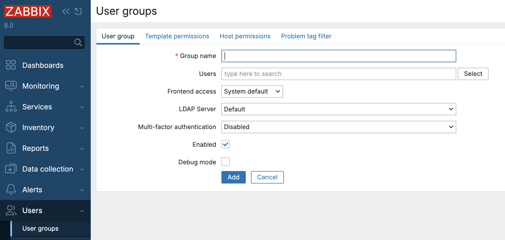
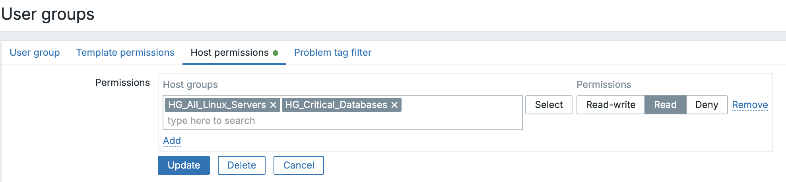
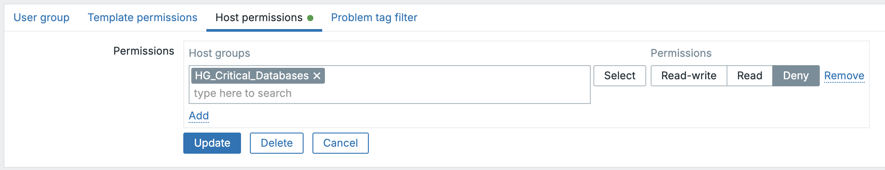
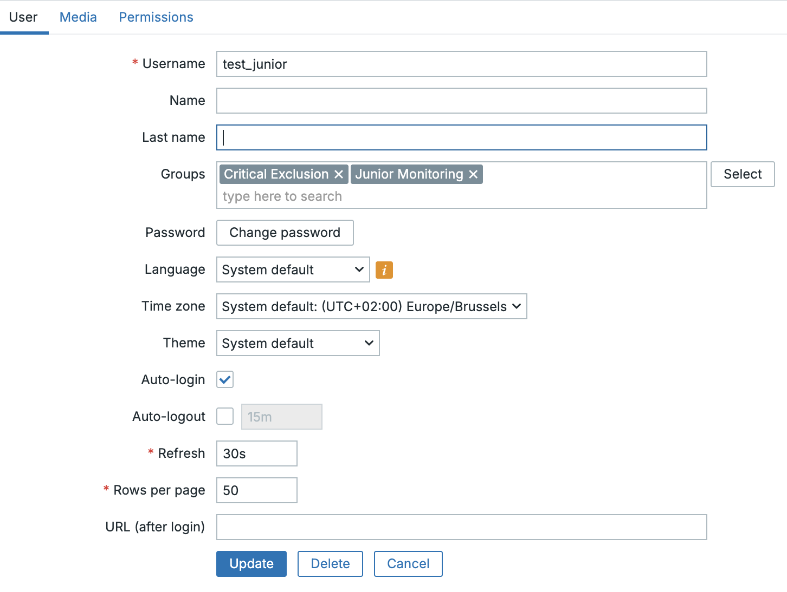
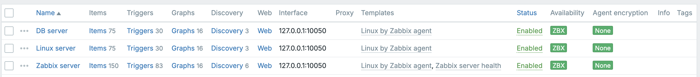

Gebruikersgroepen
In elk bedrijfsmonitoringplatform is het instellen van rolgebaseerde toegangscontrole (RBAC) van cruciaal belang voor het handhaven van zowel de veiligheid als de duidelijkheid van de operationele verantwoordelijkheid. Voor Zabbix is deze controle gebaseerd op het fundamentele concept van Gebruikersgroepen.
In Zabbix 8.0 dienen gebruikersgroepen als het primaire mechanisme voor het toekennen van rechten en het structureren van de toegang tot de gemonitorde gegevens en configuratie-entiteiten. Dit hoofdstuk beschrijft de functie van gebruikersgroepen, leidt je door hun configuratie en schetst best practices voor het toepassen ervan in een robuuste, echte implementatie.
De rol van een gebruikersgroep
Een Gebruikersgroep in Zabbix is een logische verzameling van individuele gebruikersaccounts. In plaats van de rechten voor honderden gebruikers afzonderlijk te beheren, vereist Zabbix dat gebruikers worden toegewezen aan een of meer groepen. Toegangsrechten, zoals de mogelijkheid om hostgroepen te bekijken, sjablonen te configureren of specifieke probleemtags te zien, worden dan toegekend op het groepsniveau.
This group centric architecture provides several major benefits:
- Simplified Management: Access rights are managed by role (e.g., "Network Engineers," "Database Administrators") instead of by individual user.
- Consistency: Ensures that all users within the same role possess a consistent, standardized set of permissions.
- Segregation of Duties: Enables clear separation between viewing (read-only) and configuration (read-write) access.
Technical Definition: User groups allow grouping users for both organizational purposes and for assigning permissions to data. Permissions to viewing and configuring data of host groups and template groups are assigned to user groups, not individual users. A user can belong to any number of groups.
Configuring a User Group
In Zabbix, user groups are defined and maintained solely via the web frontend. The procedure has remained largely unchanged between version 8.0 and previous generations, ensuring a familiar configuration experience for administrators.
Group Creation and General Attributes
- Navigate to Administration → User groups.
- Click Create user group (or select an existing group to modify).
- The configuration form is divided into four critical tabs: User group, Template permissions, Host permissions, and Problem tag filter.

2.20 user group menu
The User group Tab
This initial tab defines the group's general properties and its membership:
- Group name: A unique, descriptive identifier (e.g.,
NOC-RO,System-Admins-RW). - Users: Add existing users to this group. A user can be a member of multiple groups.
- Frontend access: Controls the authentication method for group members.
Options include
System default,Internal,LDAP, orDisabled(useful for API-only accounts or for temporarily locking frontend access for a role). - LDAP server: If
LDAPaccess is chosen, select the specific LDAP server configuration to be used for members of this group. - Multi-factor authentication (MFA): Select the method to be enforced for the group. If a user is a member of multiple groups, the most secure MFA setting will typically apply.
- Enabled: The master switch to activate or deactivate the group and its members.
- Debug mode: A powerful, optional setting that enables detailed debug logging for all group members in the Zabbix frontend.
???+ tip "The Debug User Group" Zabbix includes a dedicated Debug user group
out-of-the-box. Instead of activating the debug option for an existing
production group, it is cleaner practice to simply add the required user to the
pre-existing Debug group.
Permission Tabs: Host Groups and Template Groups
Permissions are configured by assigning access levels to Host Groups and Template Groups. These entities act as containers, meaning the permissions assigned to the group apply to all nested groups and all entities within them.
Template Permissions Tab
This section controls access to the configuration elements of templates (items, triggers, graphs, etc.) via their Template Groups.
For each assigned Template Group, one of the following permissions must be selected:
- Read-only: Users can view the template configuration and see data derived from it, but they cannot modify or link the template.
- Read-write: Users can view, modify, and link/unlink the template and its entities (items, triggers, etc.).
- Deny: Explicitly blocks all access.
Host Permissions Tab
This tab works identically to the Template Permissions tab but applies the access levels to Host Groups and the hosts contained within them.
Problem Tag Filters: Granular Alert Access
The final configuration tab, Problem tag filter, allows for fine-grained control over which problems (alerts) a user group can see.
This is invaluable for enterprise environments where users should only be alerted to issues relevant to their domain. For instance, a Database Administrator should not be distracted by network switch problems.
Filters are applied to specific host groups and can be configured to display:
- All tags for the specified hosts.
- Only problems matching specific tag name/value pairs.
When a user is a member of multiple groups, the tag filters apply with OR logic. If any of the user's groups allows visibility of a specific problem based on its tags, the user will see it.
???+ example "Example: Database Administrator Filter" To ensure a Database Administrator group only sees relevant issues, the problem tag filter would be configured to specify:
- **Tag name:** `service`
- **Value:** `mysql`
This ensures the user only sees problems tagged with `service:mysql` on the
host groups they have permission to view.
Template Permissions — Frontend Behavior and Editing Limitations
The behavior of the Data collection → Templates view and host configuration screens is strictly tied to the user’s permission level on template groups. Zabbix intentionally hides templates from users who have only Read-only access. This is by design, as described in https://support.zabbix.com/browse/ZBXNEXT-1070
| Action or Screen Element | Read-only | Read-write | Description / Impact |
|---|---|---|---|
| View Data collection → Templates | ❌ | ✅ | Users with Read-only access do not see any templates. Template groups are only visible to users with Read-write rights. (ZBXNEXT-1070) |
| Open template configuration | ❌ | ✅ | Not available for Read-only users — templates are hidden entirely |
The Rule of Precedence: Deny Always Wins
A user's effective permission is the result of combining the rights from all
groups they belong to. Zabbix resolves these overlapping permissions by applying
a simple, strict hierarchy based on the most restrictive level, unless a Deny
is present.
Hierarchy of Precedence
The order of precedence is absolute: Deny is the highest, followed by Read-write, and finally Read-only.
flowchart TB
A["Deny (highest precedence)"]:::deny
B["Read-write (overrides Read-only)"]:::rw
C["Read-only (lowest precedence)"]:::ro
A --> B
B --> C
classDef deny fill:#f87171,stroke:#7f1d1d,stroke-width:2px,color:white;
classDef rw fill:#60a5fa,stroke:#1e3a8a,stroke-width:2px,color:white;
classDef ro fill:#a7f3d0,stroke:#065f46,stroke-width:2px,color:black;
This precedence can be summarized by two core rules:
- Deny Always Overrides: If any group grants Deny access to a host or
template group, that user will not have access, regardless of any other
Read-onlyorRead-writepermissions. - Most Permissive Wins (Otherwise): If no
Denyis present, the most permissive right applies. Read-write always overrides Read-only.
| Scenario | Group A | Group B | Effective Permission | Rationale |
|---|---|---|---|---|
| RW Over RO | Read-only | Read-write | Read-write | The most permissive right wins when Deny is absent. |
| Deny Over RO | Read-only | Deny | Deny | Deny always takes precedence and blocks all access. |
| Deny Over RW | Read-write | Deny | Deny | The most restrictive right (Deny) overrides the most permissive. |
Permissions in the "Update Problem" Dialog
In Zabbix 8.0, the actions available in the Monitoring → Problems view (via the Update problem dialog) are controlled by two distinct mechanisms working in tandem:
- Host/Template Permissions: Governs basic access to the problem and whether configuration-level changes can be made.
- User Role Capabilities: Governs which specific administrative actions (like acknowledging, changing severity, or closing) are enabled.
The table below clarifies the minimum required permissions to perform actions on an active problem:
| Action in “Update problem” dialog | Required Host Permission | Required Template Permission | Required Role Capability / Notes |
|---|---|---|---|
| Message (add comment) | Read-only or Read-write | Same level as host | Requires the role capability Acknowledge problems. |
| Acknowledge | Read-only or Read-write | Same level as host | Requires Acknowledge problems. Read-only access is sufficient. |
| Change severity | Read-write required | Read-write if template trigger | Requires the Change problem severity capability. |
| Suppress / Unsuppress | Read-write required | Read-write if template trigger | Requires the Suppress problems capability. |
| Convert to cause | Read-write required | Read-write if template trigger | Requires Manage problem correlations capability. |
| Close problem | Read-write required | Read-write if template trigger | Requires Close problems manually capability. |
Best Practices for Enterprise Access Control
Building a maintainable, secure Zabbix environment requires discipline in defining groups and permissions.
- Adopt Role-Based Naming: Use clear, standardized names that reflect the
user's role and their access level, such as
Ops-RW(Operations Read/Write) orNOC-RO(NOC Read-Only). - Grant Access via Groups Only: Never assign permissions directly to an individual user; always rely on group membership. This ensures auditability and maintainability.
- Principle of Least Privilege: Start with the most restrictive access (Read-only) and only escalate to Read-write when configuration-level changes are an absolute requirement of the user's role.
- Align with Organizational Structure: Ensure your Host Groups and Template
Groups mirror your organization's teams or asset categories (e.g.,
EU-Network,US-Database,Finance-Templates). This makes permission assignment intuitive. - Regular Review and Audit: Periodically review group memberships and permissions. A user's role may change, and their access in Zabbix must be adjusted accordingly.
- Test Restricted Views: After creating a group, always log in as a test user belonging to that group to verify that dashboards, widgets, and configuration pages display the correct restricted view.
Example : User permissions
This exercise will demonstrate how Zabbix calculates a user's effective permissions when they belong to multiple User Groups, focusing exclusively on the core access levels: Read-only, Read-write, and Deny.
Our Scenario
You are managing access rights for a large Zabbix deployment. You need to grant general viewing access to all Linux servers but specifically prevent a junior team from even seeing, let alone modifying, your highly critical database servers.
You will have to configure two overlapping User Groups to demonstrate the precedence rules:
- Group A (Junior Monitoring): Grants general Read-only access to a wide host scope.
- Group B (Critical Exclusion): Applies an explicit Deny to a specific, critical host subset.
Host Group Preparation
Ensure the following Host Groups exist in your Zabbix environment:
- HG_All_Linux_Servers (The wide scope of hosts)
- HG_Critical_Databases (A subset of servers that is also within HG_All_Linux_Servers)
You can create them under Data collection → Host groups.
Configuring the User Groups
- Create Group A: 'Junior Monitoring'
- Navigate to Users → User groups.
- Create a new group named 'Junior Monitoring'.
- In the Host permissions tab, assign the following right:
- HG_All_Linux_Servers: Read-only (Read)
- HG_Critical_Databases: Read-only (Read)
 2.21 Junior monitoring
- Create Group B: 'Critical Exclusion'
- Create a second group named 'Critical Exclusion'.
- In the Host permissions tab, assign the following right:
- HG_Critical_Databases: Deny
 ch02.22 Critical exclusion
Creating the Test User
We will create the user first, then assign them to the groups.
- Navigate to User Creation: Go to Users → Users in the Zabbix frontend.
- Click Create user.
- Details:
- Username: test_junior
- Name & Surname: (Optional)
- Password: Set a strong password and confirm it.
- Language & Theme: Set as desired.
- Permissions: Select role
User roleas this has the type User (This is important, as 'Super Admin' bypasses all group restrictions). - Add the user to both group
Junior MonitoringandCritical Exclusion.
- Save: Click Add.
 ch02.23 test user
Create the hosts
We will create 2 host a linux server and a db server.
- Navigate to
Data collection→Hosts. - Click on create host.
- Details:
- Host name: Linux server
- Templates: Linux by Zabbix agent
- Host groups: HG_All_Linux_Servers
- Interfaces: Agent with IP 127.0.0.1
- Save: Click Add.
 ch02.24 Add hosts
Add a DB server exact as above but change :
- Host name: DB server
- Host groups: HG_Critical_Databases
- Save: Click Add.
This should work as long as you have your zabbix agent installed reporting back
on 127.0.0.1. This is how it's configured when you first setup the Zabbix
server with an agent.
Test the Outcome
Logout as the Super admin user and log back in as user test_junior.
When we now navigate to Monitoring → Hosts, we see that only the Linux
server is visible in the list of hosts. When we click on Select behind Host
groups we will only be able to see the group HG_All_Linux_Servers.
This table outlines the combined, effective rights for the user
test_junior (who is a member of both User Groups).
| Host Group (HG) | Permission via 'Junior Monitoring' | Permission via 'Critical Exclusion' | Effective Permission | Outcome |
|---|---|---|---|---|
HG_All_Linux_Servers |
Read-only | No Explicit Rule | Read-only | Access to view data is Allowed. |
HG_Critical_Databases |
Read-only | Deny | Deny | Access is Blocked (host is hidden). |
Conclusie
Because test_junior belongs to a group that explicitly denies access to the Critical Databases, the host is hidden entirely, proving that Deny Always Wins regardless of other permissions. So we can conclude that user groups form the essential foundation of access control in Zabbix 8.0. They define what each user can see and configure (via host/template permissions).
Vragen
- If a user only has Read-only permissions assigned to a Template Group, will they be able to see those templates listed under Data collection → Templates?
- Scenario: A user, Bob, is a member of two User Groups: 'NOC Viewers' (which has Read-only access to HG_Routers) and 'Tier 2 Techs' (which has Read-write access to the same HG_Routers). Question: Can Bob modify the configuration of the routers in Zabbix, or is he limited to viewing data? Explain your answer based on Zabbix's precedence rules.
- Scenario: A user, Alice, is a member of two User Groups: 'Ops Team' (which has Read-write access to the Host Group HG_Webservers) and 'Security Lockdown' (which has Deny access to the exact same HG_Webservers). Question: What are Alice's effective permissions for the hosts in HG_Webservers? Can she view or modify them, and why?